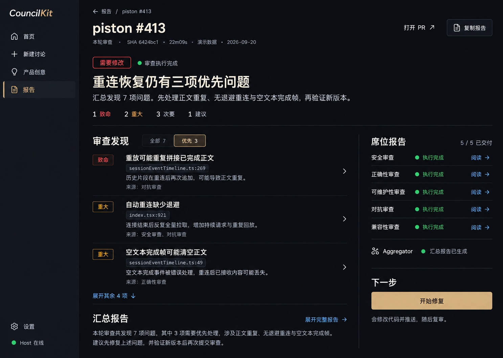
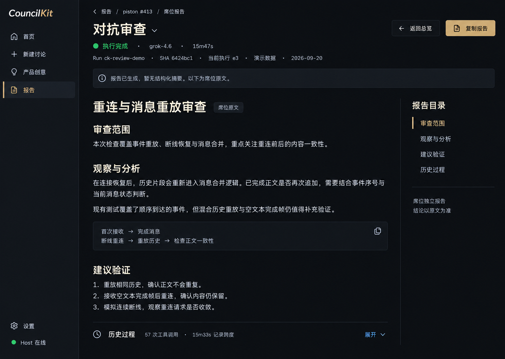
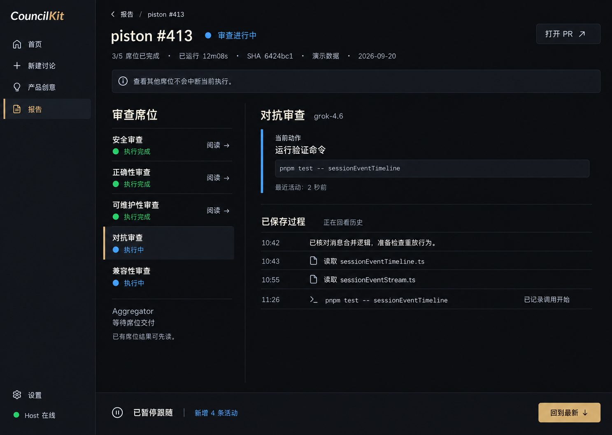
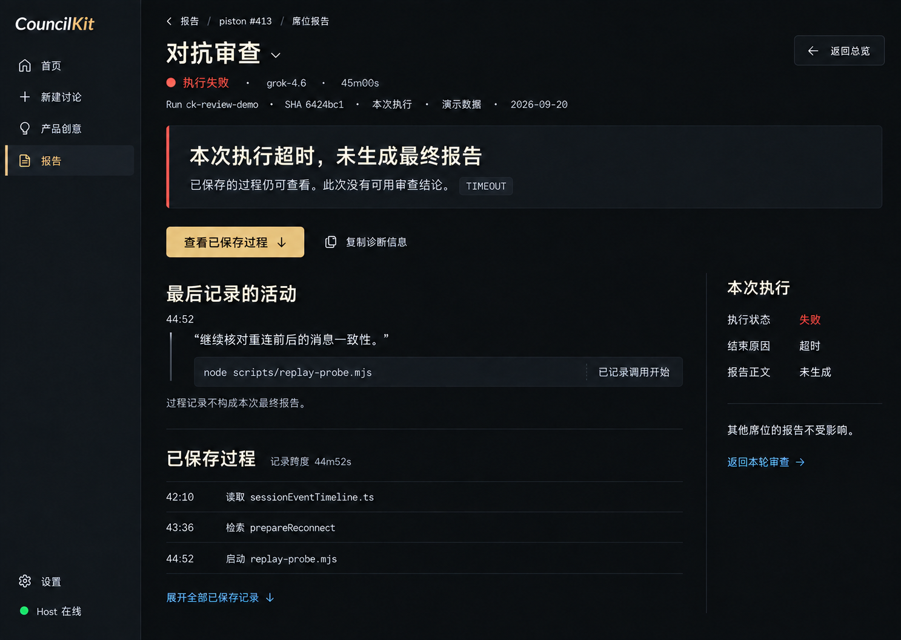
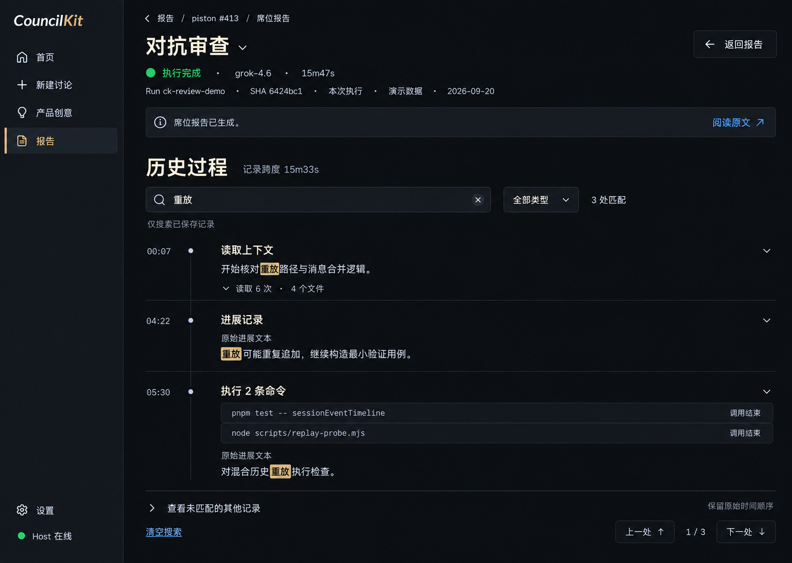
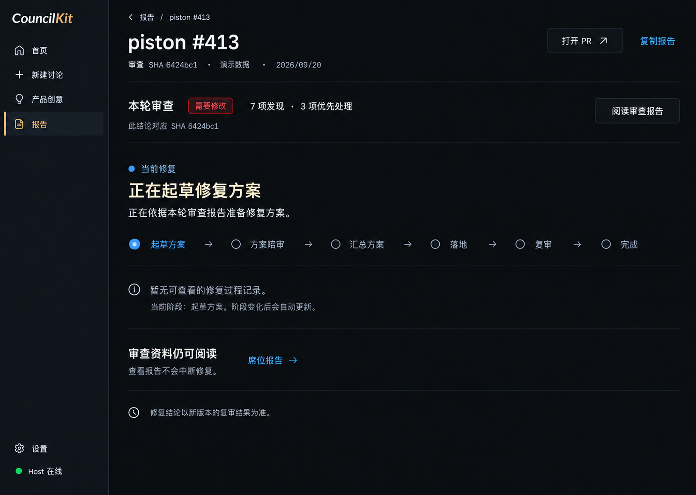

6 张高保真状态稿。A 为可独立交付的界面改善，B 为可靠席位结果，C 为后续增强。每张图的范围和数据门槛就在旁边；点击图可放大。此页是静态设计画板，图中产品按钮不执行操作。
A 布局 · B 席位全文
先读本轮结论，再进入需要处理的问题。

B 核心结果
报告有内容就是正常阅读态。

A 跟随控制 · B 结果入口
最新状态更新，阅读位置保持不动。

说明失败范围与可读内容，不制造审查结论。

C 后续增强
在已保存内容中找到具体记录。

A 独立交付
旧结论与当前修复任务一眼分清。
